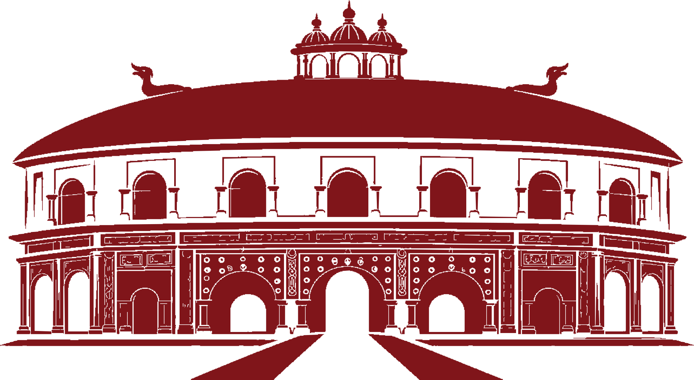
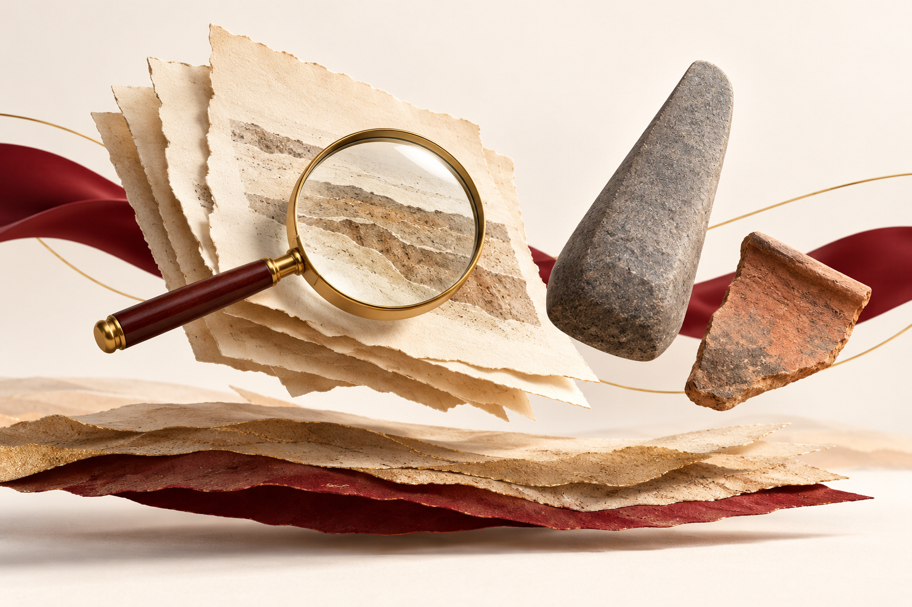
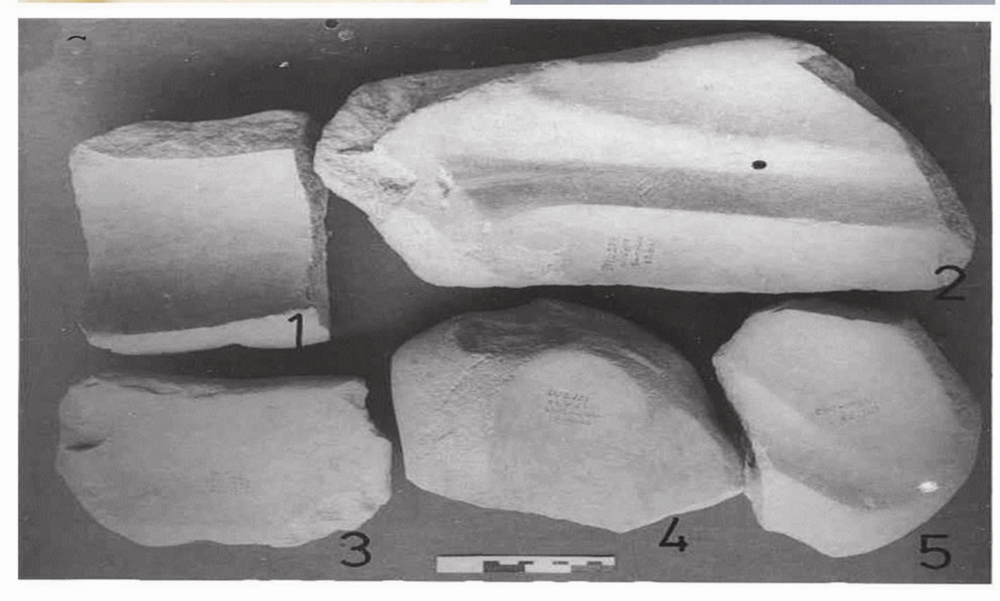
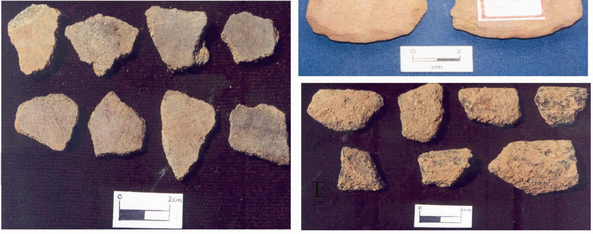

BEFORE THE KINGDOMS / BOOK 01 / CHAPTER 01
Reading the
Deep Past
Learn to read an object, its context and its date before drawing a historical conclusion.

Modern AI conceptual illustration. The objects are teaching props, not documented excavated finds.
- Identify the main kinds of archaeological evidence.
- Distinguish stratigraphic sequence from scientific dating.
- Match Assam sites to their reported finds.
- Separate traditions, observations and interpretations.
Study route: Concepts · site–find table · dating comparisons · rapid revision · original questions.
Layout proof of the existing draft. Regional evidence review is in progress; this chapter is not editorially approved.
1.1 Archaeological evidence: the basics
Archaeology studies the human past through material remains and their setting. For the early past covered in this book, stone tools, pottery, deposits and excavated features are central sources. An artifact becomes more useful when its findspot and associated material are recorded.[1]
| Term | Simple meaning | How to use it |
|---|---|---|
| Artifact | An object made or modified by people | Identify the object before explaining its use |
| Celt | A stone implement, often ground or polished, of axe or adze form | Do not confuse the object name with a calendar date |
| Potsherd | A broken piece of a pottery vessel | A fragment can preserve fabric, decoration and context |
| Archaeological context | The recorded setting and relationships of a find | Ask where it lay and what was associated with it |
| Assemblage | A group of archaeological material considered together | Check whether the association is secure |
Assam connection: Rao's Sarutaru report distinguishes older surface and household collections of stone celts from the stratified association of celts and pottery at Daojali Hading. The key idea is simple: an excavated association can provide information that an isolated object cannot.[1]
Learn these site–find combinations
| Site | Location or setting | Evidence to remember |
|---|---|---|
| Daojali Hading | Dima Hasao, Assam | Excavated in 1961; associated stone tools and pottery, including shouldered celts and cord-marked pottery[2] |
| Sarutaru | Reported southeast of Guwahati, near the Digaru and the plateau–valley margin | Ground stone celts and potsherds in recorded excavation contexts; cord impressions described on pottery[1], [3] |
| Gawak Abri | Garo Hills, Meghalaya | A comparison site in the 2017 pottery-dating paper; do not place it in present-day Assam[2] |
Remember: Daojali Hading and Sarutaru belong in Assam's archaeological discussion. Gawak Abri is a neighbouring Meghalaya comparison. A regional study may include more than one state.

Observe the range of tool forms and the source scale. Shape alone does not give a calendar date. Sharma and Singh (2017), figure 3, printed p.495 / PDF p.4; see note 2. Photograph date not independently established. Original image retained; reproduction clearance pending. Internal research proof.
1.2 Surface finds, excavation and stratigraphy
Stratigraphy studies the relationships between deposits and features. It helps establish which came earlier or later. It does not automatically provide an exact year.[4]
| Evidence | What it helps establish | Main limitation |
|---|---|---|
| Surface find | Presence of material in an area | Original buried context may be lost |
| Recorded excavation | Position and association of finds | Association must still be interpreted carefully |
| Stratigraphic relationship | Relative order of deposits or events | Calendar age requires additional evidence |
Simple example: An old potsherd may enter the fill of a later pit. The sherd and the pit fill are then found together, although they need not be the same age. This is a teaching example, not a reconstruction of an Assam excavation.
Two useful terms: Residual material survives from an earlier episode. Intrusive material enters a context later. Both can complicate the relationship between a sample and the activity we want to date.[4]
Observation versus interpretation
| Statement | Type |
|---|---|
| Rao reported carbonized wood in the Sarutaru trenches | Recorded observation |
| Rao explained the wood as evidence of vegetation burning during shifting cultivation | Interpretation proposed by the excavator |
An observation and its explanation should not be treated as identical. Rao's published account describes celts and potsherds within a cultural horizon in three trenches. It does not make the horizon's calendar age certain simply by describing its depth.[3]
Common confusion: Similar-looking pottery does not necessarily belong to the same period. Das's Karbi Langpi survey identifies difficulty in placing ceramic material chronologically when fabrics and decoration resemble material from different periods.[5]
1.3 Dates and dating methods
Learn the method first, then the result. A number without its unit, uncertainty or sample association can be misleading.
| Method or expression | Meaning | Important distinction |
|---|---|---|
| Relative dating | Establishes earlier/later relationships | Gives sequence rather than an exact calendar year |
| Radiocarbon dating | Estimates age from carbon in suitable material | Dates the sampled material; archaeological association still matters |
| BP in conventional radiocarbon results | Before Present, with a fixed 1950 reference point | “Present” does not move forward each year |
| Calibration | Relates a radiocarbon measurement to calendar time | An uncalibrated BP result is not a calendar date obtained by simple subtraction |
| OSL | Optically stimulated luminescence | A different scientific method from radiocarbon |
| ka | Thousands of years, under the study's reporting convention | Retain the uncertainty and reference convention |
Radiocarbon results require calibration because atmospheric radiocarbon has varied. A published result should retain the laboratory identifier, uncertainty and calibration details. Charcoal can also predate the event being investigated, so context remains important.[4]
Daojali Hading: the date you must read correctly
Sharma and Singh's 2017 study reports these pottery OSL estimates:[2]
| Site | Published estimate | Method |
|---|---|---|
| Daojali Hading, Assam | 2.7 ± 0.3 ka | OSL of pottery |
| Gawak Abri, Meghalaya | 2.3 ± 0.2 ka | OSL of pottery |
Read correctly: The central Daojali estimate is about 2,700 years, with the reported uncertainty retained. It concerns the studied pottery sample. It is not a radiocarbon result and does not date the first arrival of people in Assam. Do not convert it into an exact BCE year without checking the study's reference convention.
Exam pitfall: “Daojali Hading was excavated in 1961” dates the modern investigation. “2.7 ± 0.3 ka” is the published age estimate for a pottery sample. These statements answer different questions.

A neighbouring comparison, not an Assam find. Retain object labels and source scale. Sharma and Singh (2017), figure 2, printed p.494 / PDF p.3; see note 2. Photograph date not independently established. Reproduction clearance pending. Internal research proof.
1.4 Archaeology and traditions
Use each source for the question it can answer. A tradition and an excavation record are different kinds of evidence.
| Source type | What to study | What to avoid |
|---|---|---|
| Archaeological evidence | Material remains, deposits and measured associations | Assigning a named ruler or community without supporting evidence |
| Written or oral tradition | Narrative, transmission and attributed meaning | Treating a narrated event as independently dated by archaeology |
| Ethnographic account | A practice recorded among living people at a stated time | Assuming the practice or community is unchanged from prehistory |
For this series: Naraka and related traditions receive their own treatment in Book 02. Their placement after this volume is an editorial reading order, not proof of a dated mythological era.
Rao's 1977 article compared archaeological forms with contemporary practices. Such comparison may suggest questions, but resemblance alone does not establish the ancient maker's language, ancestry or social institutions. The article's hierarchy of cultural development is not adopted here.[3]
Short-answer rule: Name the source, state what it shows, and mention its limit. Do not replace a missing date with a mythological reign or a modern community identity.
1.5 Museums, reports and source checking
An old collection can support new research if the material and its records survive. Sharma and Singh used pottery collected in earlier excavations. This illustrates the value of retaining both samples and documentation.[2]
Four checks for a historical statement
- Source: Who reports it? Is it an excavation report, scientific paper or later summary?
- Location: Which site and present-day state are involved?
- Date: Is it an excavation year, measured sample age or tentative comparison?
- Conclusion: Does the evidence establish a fact or support an interpretation?
Research caution: Kumar's 2023 thesis reports that the earlier Sarutaru excavation spot could not be relocated securely, although Marakdola was located with help from recorded menhirs. A modern village name or map pin does not independently identify an old trench.[6]
Conflicting dates: Rao's two 1977 accounts give different modern fieldwork ranges: 1967–73 in Man and Environment and 1971–74 for the two sites in Asian Perspectives. Do not memorize either range as an uncontested fact. These are investigation dates, not dates of ancient occupation.[1], [3]
Quick revision
| Cue | Recall |
|---|---|
| Archaeological context | Findspot and relationships |
| Stratigraphy | Relative sequence |
| Surface collection | Useful lead; original context may be uncertain |
| Daojali Hading | Dima Hasao, Assam; excavation in 1961 |
| Daojali finds | Shouldered celts and cord-marked pottery |
| Sarutaru finds | Ground stone celts and potsherds |
| Gawak Abri | Meghalaya, not present-day Assam |
| Conventional radiocarbon BP | Fixed reference: 1950 |
| Daojali pottery estimate | 2.7 ± 0.3 ka; OSL |
| Myth and archaeology | Different sources; do not interchange their dates |
One-line memory aid: Site → location → finds → dating method → limitation.
Practice questions
These are original chapter-based questions, not previous-year questions or predictions of exam frequency.
Q1. Daojali Hading is located in which present-day state?
A. Meghalaya
B. Assam
C. Manipur
D. Nagaland
Q2. Which combination is associated with Daojali Hading in the cited archaeological literature?
A. Roman coins and marble statues
B. Copperplate charters and royal seals
C. Shouldered celts and cord-marked pottery
D. Printed manuscripts and glazed tiles
Q3. Stratigraphy primarily helps establish:
A. The exact language of toolmakers
B. Relative relationships between deposits
C. An exact calendar year without other evidence
D. The names of rulers
Q4. In conventional radiocarbon reporting, BP uses which reference year?
A. 1850
B. The current year
C. 1950
D. 2000
Q5. The 2.7 ± 0.3 ka estimate reported for Daojali pottery in the 2017 study was obtained through:
A. Radiocarbon dating
B. Reading an inscription
C. OSL dating
D. Counting royal generations
Q6. Consider these statements:
1. Gawak Abri is a Meghalaya comparison site.
2. A pottery sample age establishes the first arrival of people in Assam.
Which is correct?
A. 1 only
B. 2 only
C. Both 1 and 2
D. Neither 1 nor 2
Q7. Which statement distinguishes investigation date from archaeological age correctly?
A. A site's excavation year is its foundation year.
B. Daojali's 1961 excavation and the pottery OSL estimate describe different events.
C. Every object in a museum dates from the year it was acquired.
D. All objects in a trench must have been made together.
Q8. Which is the most defensible conclusion from a surface potsherd resembling pottery at another site?
A. Both sites certainly had the same rulers.
B. Both sites must belong to the same century.
C. The resemblance suggests a comparison requiring further contextual and dating evidence.
D. The sherd identifies the ancient population's language.
Answers and explanations
| Question | Answer | Explanation |
|---|---|---|
| 1 | B | Daojali Hading is in Dima Hasao, Assam. See 1.1 and note 2. |
| 2 | C | The cited literature associates shouldered celts and cord-marked pottery with the site. See 1.1 and note 2. |
| 3 | B | Stratigraphy establishes relationships and relative order; an exact calendar age needs more evidence. See 1.2 and note 4. |
| 4 | C | Conventional radiocarbon BP uses the fixed reference year 1950. See 1.3 and note 4. |
| 5 | C | The reported Daojali pottery result is OSL, not radiocarbon. See 1.3 and note 2. |
| 6 | A | Statement 1 is correct. Statement 2 goes beyond what one pottery sample can establish. See 1.1 and 1.3. |
| 7 | B | Excavation dates the investigation; the sample estimate concerns the studied material. See 1.3. |
| 8 | C | Similarity is a starting point for investigation, not proof of common age, ruler or language. See 1.2 and note 5. |
Short-answer practice
Question: Explain why archaeological context matters when studying Assam's early history. Write about 100–120 words.
Model answer: Archaeological context means the recorded setting and relationships of a find. It helps connect an object with deposits, features and associated material. An isolated surface tool may show that archaeological material occurs in an area, but its original position may be uncertain. Excavation and stratigraphy can preserve relationships and establish relative sequence. Rao's Sarutaru account records ground stone celts and pottery within excavated deposits. Daojali Hading is also important for the stratified association of tools and pottery. However, an association does not automatically provide a calendar year. Samples and dating methods must be checked before extending a result to an entire settlement. Context therefore helps distinguish supported conclusions from speculation.
Answer framework: Define context → explain its value → give an Assam example → state one dating limitation.
Source notes
- S. N. Rao, "Excavations at Sarutaru: A Neolithic Site in Assam," Man and Environment 1 (1977), pp.39–43, especially p.39 (PDF p.48). Report scan.
- Sukanya Sharma and Pankaj Singh, "Luminescence Dating of Neolithic Pottery in North East India," Current Science 113(3) (2017), pp.492–496: p.492 for site identification and the 1961 excavation; table 1, p.493, for OSL estimates; pp.493–494 for archival samples and methods. DOI. Estimates are sample-specific and not converted to exact BCE dates.
- S. N. Rao, "Continuity and Survival of Neolithic Traditions in Northeastern India," Asian Perspectives 20(2) (1977), pp.191–205: pp.191–194 for the ethnographic framework and reported field seasons; p.195 for Sarutaru contexts; p.198 for pottery. Article. Modern community identity is not treated as proof of ancient makers.
- Alex Bayliss and Peter Marshall, Radiocarbon Dating and Chronological Modelling: Guidelines and Best Practice (Historic England, 2022), sections 1.1, 1.3 and 1.5 of Radiocarbon Dating, and sections 3.2.2–3.2.3 of The Bayesian Process. Accessed 11 October 2026. General methods, not Assam dates.
- Nisha Rani Das, "Preliminary Explorations in the Karbi Langpi Valley, Karbi Anglong District, Assam with Special Emphasis on the Ceramics," Heritage 7 (2019), pp.670–678, especially pp.670–671 on chronological difficulties and survey methods. Article.
- Jitendra Kumar, Archaeology of the Digaru-Kolong River Valley with Special Emphasis on the Neolithic Period (PhD thesis, IIT Guwahati, 2023), p.41 (PDF p.61), with figs.2.1–2.3 on pp.42–43. Institutional record. Modern village identification and relocation of the old excavation spot are different claims.